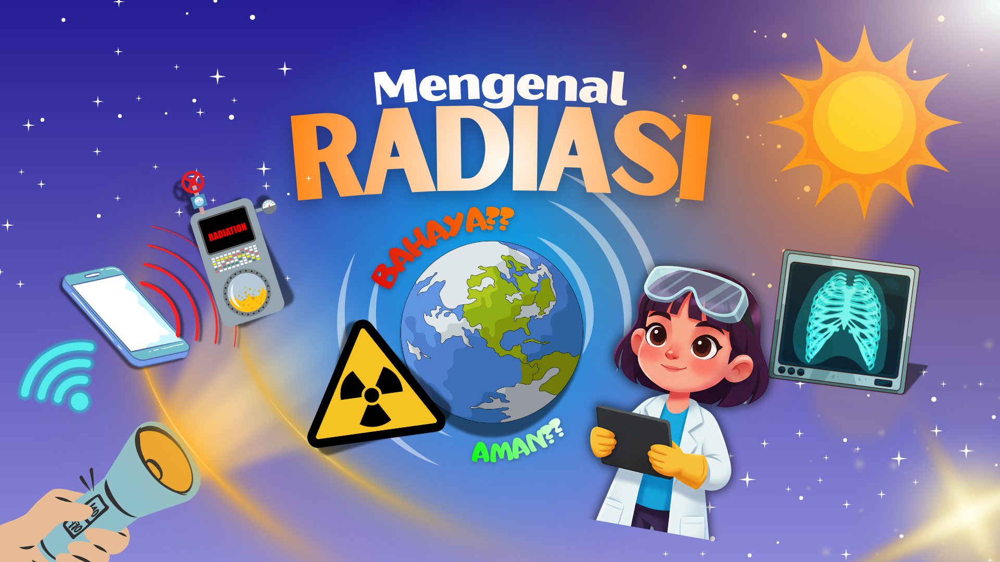
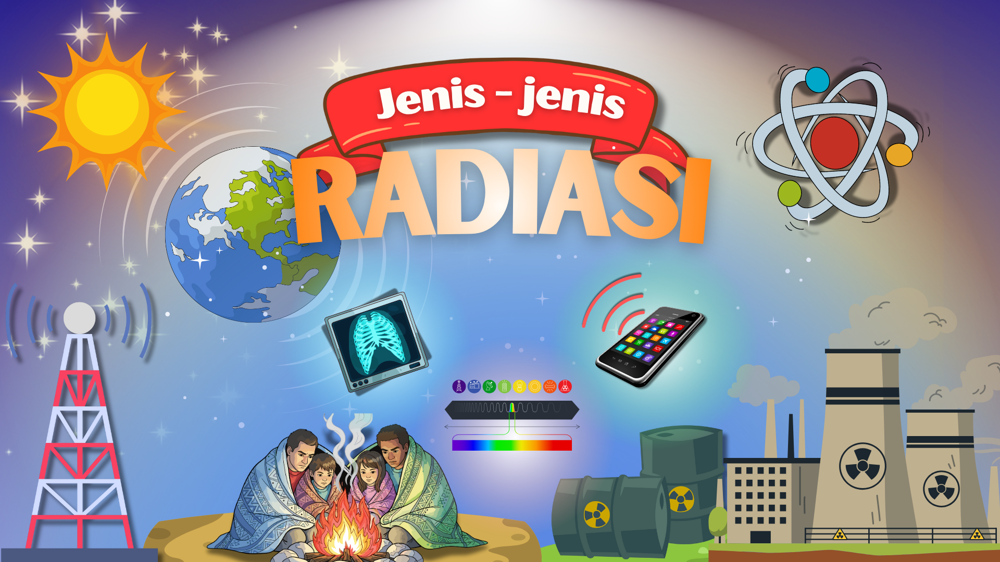
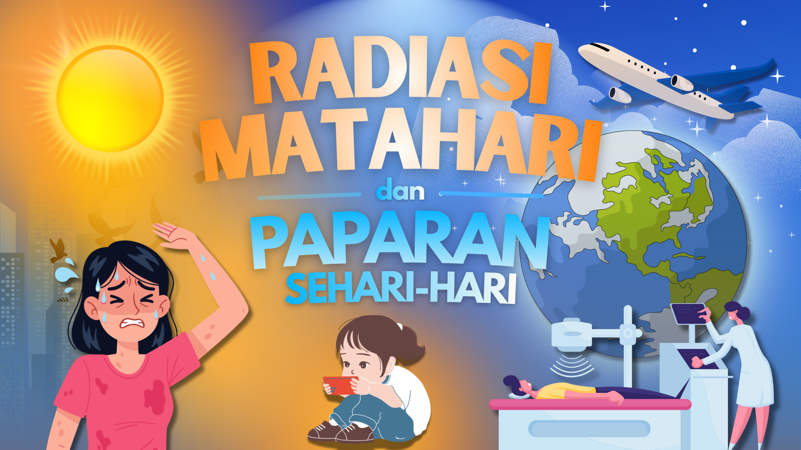

Materi Pembelajaran Radiasi
Untuk Kamu

Pengantar Radiasi
Pahami definisi dasar, karakteristik gelombang, serta klasifikasi radiasi pengion dan non-pengion di sekitar kita.
Pelajari

Jenis Radiasi
Pelajari perbedaan radiasi partikel dan elektromagnetik, serta bagaimana hukum pergeseran Wien menjadi dasar fisika kuantum.
Pelajari

Radiasi Matahari dan Paparan Sehari-hari
Analisis bagaimana sinar UV dan radiasi benda hitam dari matahari berinteraksi dengan atmosfer dan dampaknya bagi kehidupan.
Pelajari
Interaksi Radiasi dengan Tubuh dan Materi
Pelajari proses ionisasi dan eksitasi saat radiasi menembus sel tubuh manusia serta berbagai jenis material pelindung.
Pelajari.png)
Pemanfaatan Radiasi dalam Teknologi Modern
Eksplorasi penggunaan radiasi di dunia medis (X-ray/CT Scan), industri, hingga teknologi komunikasi nirkabel masa kini.
Pelajari
Keselematan Radiasi dan Perlindungan Diri
Panduan prinsip ALARA (As Low As Reasonably Achievable), penggunaan APD, dan prosedur keamanan bekerja dengan sumber radiasi.
Pelajari